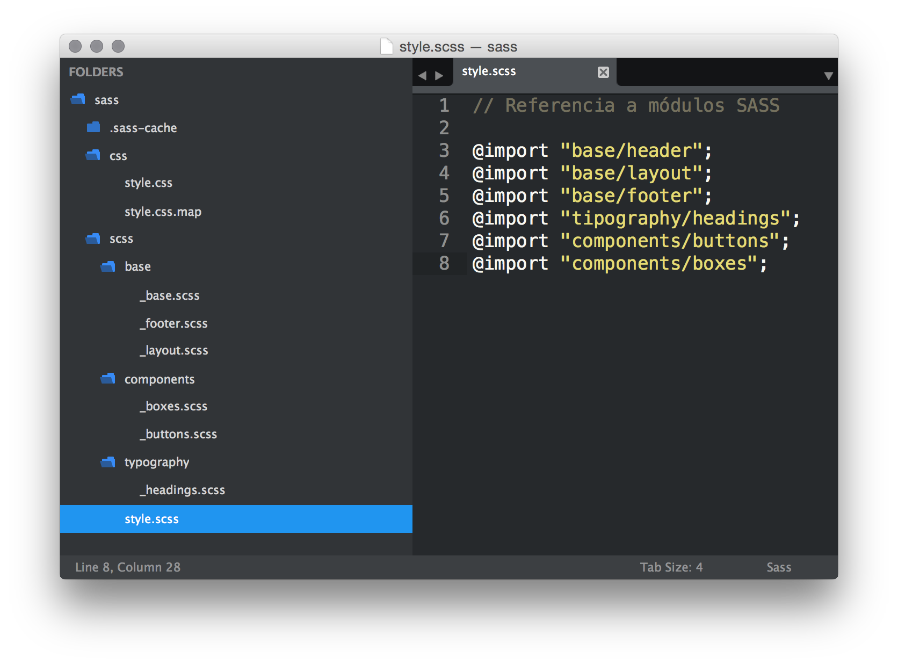

SASS nos permite añadir funcionalidades que no existen en CSS y que amplian enormemente sus posibilidades.

...eres más cool :)
$ sudo gem install sass
En MacOSX Ruby viene instalado. Desde Windows tenemos que instalarlo.

Debemos de autentificarnos como super-usuarios para poder realizar la instalación de la Gema Ruby SASS con la instrucción sudo
$ sudo gem install sass
Password: *******
Successfully installed sass-3.4.13
Parsing documentation for sass-3.4.13
1 gem installed
El único formato de estilos que entienden los navegadores web es el CSS. Mediante SASS traducimos su sintaxis y todas sus funcionalidades a CSS estandar.
Se llama pre-procesado de SASS a la acción de convertir la sintaxis SASS al CSS que posteriormente procesará el navegador web para renderizar la página.
Para el preprocesado necesitaremos tener una carpeta con los archivos de nuestro proyecto web en SASS que hará de origen y otra carpeta de destino en la que generaremos de forma automática los archivos CSS estandar.
La extensión de archivo SASS es .scss
Una vez creados los directorios origen/destino indicamos a SASS que "vigile" los cambios que se produzcan en la carpeta de origen
$ sass --watch src/sass:public/css
El preprocesador SASS generará en tiempo real el archivo CSS resultante de las modificaciones que hagamos en el archivo de origen en SASS.
Una vez finalizado el proyecto en SASS solo subiremos la carpeta con los archivos CSS. Los archivos SASS los guardaremos por si necesitamos editar o añadir nuevos cambios.
Los archivos SASS vienen a ser los PSD's de un diseño web.
Una variable es un registro donde guardamos un dato que necesitaremos aplicar en diferentes partes de nuestro código.
Para poder utilizar una variable primero hemos de crearla y asignarle un valor.
A este proceso se le denomina declaración de variables
Sintaxis
// Color Variables
$primaryColor: rgba(255,0,0,.5);
$secondaryColor: rgba(255,100,100,.5);
Podemos almacenar, colores, valores en píxeles o en %, tipografías, etc...
Una vez declarada, podemos reutilizar las variables en tantos lugares de nuestro código como necesitemos.
// Aplying color
h1 {
color: $primaryColor;
}
h2 {
color: $secondaryColor;
}
Al aplicar las variables $prymaryColor y $secondaryColor a los h1 y h2 respectivamente SASS nos genera el siguiente CSS:
// Preprocessed CSS result
h1 {
color: rgba(255,0,0,.5);
}
h2 {
color: rgba(255,100,100,.5);
}
SASS permite anidar un selector CSS dentro de otro para obtener una mayor versatilidad:
.slider-container {
float:left;
max-width: $inner-width;
img {
border: none;
display: block;
margin: $gutter;
}
}
En la anidación anterior el CSS resultante será:
.slider-container {
float:left;
max-width: 768px;
}
.slider-container img {
border: none;
display: block;
margin: 20px;
}
Para agilizar el proceso de edición y depuración de errores evitaremos trabajar con un único archivo CSS. En lugar de eso crearemos diferentes archivos SASS que separarán en módulos nuestro código.
Finalmente, todos los archivos SASS los combinaremos en un sólo CSS para evitar realizar múltiples llamadas HTTP que ralentizen la carga de nuestro site.
Para crear esa estructura modularizada utilizaremos @import en nuestro archivo style.scss. El resultado será un style.css con todo el código importado.
// Contenido de style.scss
@import "base/header";
@import "base/layout";
@import "base/footer";
@import "tipography/headings";
@import "components/buttons";
@import "components/boxes";
Para indicar en SASS que un archivo concreto es un módulo le añadimos un "_" delante del nombre. De esta forma no crearemos un archivo CSS más sino que formará parte del @import
// Nombres de los módulos SASS
base/_header.scss
base/_layout.scss
base/_footer.scss
tipography/_headings.scss
components/_buttons.scss
components/_boxes.scss
// Archivo SASS
style.scss
La estructura de archivos quedaría así:
La importancia de modularizar con @import
Un proyecto web se compone de múltiples elementos. Creando un archivo SASS para cada uno facilitamos el mantenimiento y el debug de errores.
Una propuesta de estructura sería:
Refactoriza tu proyecto en SASS y sube los cambios a Git
Deberás de modularizar la estructura CSS actual de tu proyecto en módulos SASS separados según tipología.
 meowww
meowww